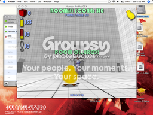
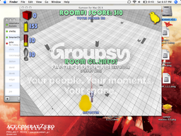
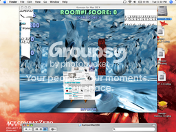

Ah, Kumoon. Good game.
Finnish games r0xx0r!
Edit: Metanet games r0xx0r twice as much!
Finnish games r0xx0r!
Edit: Metanet games r0xx0r twice as much!
You can make your own levels and tag them onto the end of the main game. Look in the rooms folder.
EDIT: Hey, you can cheat by pushing "dead" blocks or the balls into things. That's rather sloppy programming.
EDIT: Hey, you can cheat by pushing "dead" blocks or the balls into things. That's rather sloppy programming.
Doesn't work with me. It says. Unzip files 74 files unzipped succesfully
Doesn't work with me. It says. Unzip files 74 files unzipped succesfully
Go the the folder the files were unzipped to. If you don't know where that is, then unzip them again and change the path to somewhere you know this time.
Give me a better demo. I still don't get it.
I have Windows XP
I have Windows XP
I got to the last level of that... and decided it was totally impossible. It's a good game, though.
... Hey, you can cheat by pushing "dead" blocks or the balls into things. That's rather sloppy programming.
That's basically the only way to complete some levels...
Oh my god. For one second, I thought you meant "Kumon", which is this tutoring program I recently used to attend for roughly four years which just gave me hell. A program which gave me ten pages of math a day to complete (went to the building twice a week to do work and pick up work for the rest of the week). Holy hell, did I hate it, but did it make me a hell lot smarter.
[/off-topic]
I haven't the effort to download and play that game, but from the screenshot, is it about chicks holding a laser toppling down massive blocks?
[/off-topic]
I haven't the effort to download and play that game, but from the screenshot, is it about chicks holding a laser toppling down massive blocks?
Yea. The physics are freakin' awesome. You can just delete it right away if you don't like it; there's no harm in trying it out unless you're time-pressed (and no one here ever is or else they wouldn't be on here  )...
)...
)...@iangb: ber ownage! (I don't know why the top bit was cut off from the image)

Check out my top-left stats. One very, very obvious hint: it would be MUCH harder (almost impossible, even, if you have no spatial sense of depth) ifhidden if you want a challengethere was no graph on the terrain, but it's quite easy once you grasp the concept of how to solve it (by highlighting this text, of course!).
If you can get higher than 20 pts. by the end of the round on that level, I'll make you an administrator (a.k.a. it's impossible to get more than 20 pts. by the end of the round on that level :D :D :D).
Dang, I very might start mapping...
Check out my top-left stats. One very, very obvious hint: it would be MUCH harder (almost impossible, even, if you have no spatial sense of depth) ifhidden if you want a challengethere was no graph on the terrain, but it's quite easy once you grasp the concept of how to solve it (by highlighting this text, of course!).
If you can get higher than 20 pts. by the end of the round on that level, I'll make you an administrator (a.k.a. it's impossible to get more than 20 pts. by the end of the round on that level :D :D :D).
Dang, I very might start mapping...
^im holding you to your word, i got 100 points on that level , you owe me adminship!!!
, you owe me adminship!!!
Photoshopper.
^
As for that picture.. Its too small for me to see anything. And as for the game.. Chicken+Firearms+Explosive+Physics=YEAAAH
Bloody awesome.
And I, too, thought it was Kumon. ..those horrible arses.. *eye twitches*
As for that picture.. Its too small for me to see anything. And as for the game.. Chicken+Firearms+Explosive+Physics=YEAAAH
Bloody awesome.
And I, too, thought it was Kumon. ..those horrible arses.. *eye twitches*
fun game, the levels are quite arkward to code, it keeps messing up -.-
edit: nevermind, it was because i thought i was placing it at height 0 when i was actually placing the centre at 0
edit: nevermind, it was because i thought i was placing it at height 0 when i was actually placing the centre at 0
..Anyone else notice at about level 7 that there is a block inside of a wall, and you cant get it?
Room 17. Fire at the ground it's in, directly from above.
Ah, finally. Thanks Keron. Now all I have to do is line up a perfect grenade launcher shot and beat the last level ^__^
And as for beating your score - I'm nowhere close. Maybe.. 14,000. Around there.
And as for beating your score - I'm nowhere close. Maybe.. 14,000. Around there.
Interesting. :mull:
:mull: :mull: :mull: C'mon, people. I could use that smiley now.
@beanhead: yea, all the coding is based on the center of something. Boxes are 1 unit high, so if you want a box on the ground it's logical to set it at 0.5 (halfway for the Z axis).
:mull: :mull: :mull: C'mon, people. I could use that smiley now.
@beanhead: yea, all the coding is based on the center of something. Boxes are 1 unit high, so if you want a box on the ground it's logical to set it at 0.5 (halfway for the Z axis).
How do you edit a level???
I'm curious!!!
I'm curious!!!
Im having some real trouble with lag on this, anyone know how to solve it?
@Mysterypower: open the .DAT files in the Kumoon\Rooms folder. Make sure you read the syntax .DOC first.
@wedgie: that happened to me too, on one computer which I tested it out on. I estimate it was running at 2 FPS or less. I couldn't solve the problem Try to get ahold of another comp.?...
Try to get ahold of another comp.?...
@wedgie: that happened to me too, on one computer which I tested it out on. I estimate it was running at 2 FPS or less. I couldn't solve the problem
Try to get ahold of another comp.?...I didn't find Kumoon all that fun. Maybe it's because I played the whole thing through at once, but I still never had any desire to play it again afterward. It's an interesting game, I'll give it that, but it's not amazing.
in a small way, its similar to N.... 
Yeah but you see Keron, my computer is decent spec. Its amd 64 3200 processor, 1gb RAM, 256mb graphics card. So thats why i dont understand why it is running like this.
Wow. My computer is a piece of crap and it runs fine - even when I shoot all grenades at once and procede with a shotgun volley.
..Any tips on the last level?
Or is it just luck?
..Any tips on the last level?
Or is it just luck?
@moshpit2010: if you really want to know, highlight my post way above which has a screenshot of its completion.
@wedgie: the comp. I tested it on was decent as well. I don't know what the problem might be.
@wedgie: the comp. I tested it on was decent as well. I don't know what the problem might be.
haha keron, no i didnt photoshop it, you want to know how i got that? ill pm you if you really want to know... to bad you cant record demos...
and you still owe me adminship
and you still owe me adminship
i think he was sarcastic (smart)alco
It's hard yeah. I've been to level... 18?
Very hard puzzles.
It's hard yeah. I've been to level... 18?
Very hard puzzles.
^you really think im being sarcastic?, i got 100 on the last level fair and square, and although i doubt keron will hold to his word he still owes me adminship
I will hold to my word. Send me that PM and we'll see what happens if I can recreate exactly what you did.
I like to pun on words, tho'.
I like to pun on words, tho'.
I now invalidate your demand by clocking your points, so I now owe myself adminship.
(Even though I just achieved this score right now and I never knew this was possible without your method So I guess I still owe you somethin')
(And no, I don't have Photoshop. It costs $700, man)
In my frustration I somehow managed to rebound the ball TWICE against the central column. It actually is freakishly possible given this game engine
Go ahead. Knock the block down the first column, and just experiment shooting the Revolver, pixel by pixel. Occasionally when it smacks the horizontal side, it will actually STICK to the flat surface on top and ROLL forward (so I guess it was just amazing how the block was tilted the # of degrees that all targetblocks randomly are, and how it was perfect from the angle I fired it atthis allowed it to, after it clipped the horizontal side, roll for a nanosecond on a miniscule, UNOCCUPIED space on top, right next to the targetblock before hitting and adding yet another hundred to the point count).
If you don't believe me, that's fine with me. I still don't think I even believe myself; I keep trying to convince me it was just a glitch in the game
(Even though I just achieved this score right now and I never knew this was possible without your method
So I guess I still owe you somethin')(And no, I don't have Photoshop. It costs $700, man)
In my frustration I somehow managed to rebound the ball TWICE against the central column. It actually is freakishly possible given this game engine
Go ahead. Knock the block down the first column, and just experiment shooting the Revolver, pixel by pixel. Occasionally when it smacks the horizontal side, it will actually STICK to the flat surface on top and ROLL forward (so I guess it was just amazing how the block was tilted the # of degrees that all targetblocks randomly are, and how it was perfect from the angle I fired it atthis allowed it to, after it clipped the horizontal side, roll for a nanosecond on a miniscule, UNOCCUPIED space on top, right next to the targetblock before hitting and adding yet another hundred to the point count).
If you don't believe me, that's fine with me. I still don't think I even believe myself; I keep trying to convince me it was just a glitch in the game
d... d... di... did Keron Cyst just double post??? *screams and runs out of room*
whats the world coming to???
whats the world coming to???
And yes, my chick is literally in the ground.  I flew all the way to the ceiling and dropped, and my chick seemed to have dropped through the floor.
I flew all the way to the ceiling and dropped, and my chick seemed to have dropped through the floor.
I then wandered about for a bit; all projectiles I fired appeared from the floor and just rolled no matter what angle I fired them at, and then I wandered into the wall, and suddenly after a bit I teleported to a corner where I was stuck; I couldn't move, and no projectiles appeared anywhere (and the game lagged a lot whenever I fired anything other than the Revolver).
Kumoon's physics are extremely variable. I fired a Revolver ball at the exact pixel-positioning which is required to successfully knock down one of the four corner pillars, and the ball slighted the targetblock. It pushed it a tiny bit but it stayed on the pillar and was still red. And I fired another shot, exactly the same way the first shot was aimed, and it struck it on the side. 
I think there're random breezes in the room, or something...
EDIT@obby: If you hadn't posted that, I would've triple-posted (I didn't realize you were reading the thread at the time.)
(I didn't realize you were reading the thread at the time.)
EDIT #2 About my text above... according to the room syntax, if you don't specify a positioning for a targetblock, all unspecified targetblocks will be twisted 10 random s from their original setup.
I flew all the way to the ceiling and dropped, and my chick seemed to have dropped through the floor.I then wandered about for a bit; all projectiles I fired appeared from the floor and just rolled no matter what angle I fired them at, and then I wandered into the wall, and suddenly after a bit I teleported to a corner where I was stuck; I couldn't move, and no projectiles appeared anywhere (and the game lagged a lot whenever I fired anything other than the Revolver).
Kumoon's physics are extremely variable. I fired a Revolver ball at the exact pixel-positioning which is required to successfully knock down one of the four corner pillars, and the ball slighted the targetblock. It pushed it a tiny bit but it stayed on the pillar and was still red.
And I fired another shot, exactly the same way the first shot was aimed, and it struck it on the side. I think there're random breezes in the room, or something...
EDIT@obby: If you hadn't posted that, I would've triple-posted
(I didn't realize you were reading the thread at the time.)EDIT #2 About my text above... according to the room syntax, if you don't specify a positioning for a targetblock, all unspecified targetblocks will be twisted 10 random s from their original setup.
This game is fun, and the "loose" physics are even more fun to watch. My only complaint is the difficulty. Some of the rooms are almost as frustrating as N. 
http://img83.imageshack.us/my.php?image=36...ighscore6uw.jpg
Uncompleted score : 36,450
I think its safe to say my completion score wouldnt be lower
If only I had to get my points higher than Keron, not just the last level.

Uncompleted score : 36,450
I think its safe to say my completion score wouldnt be lower
If only I had to get my points higher than Keron, not just the last level.
If you can get higher than 20 pts. by the end of the round on that level, I'll make you an administrator
you still owe me adminship, you never said "unless i get higher"
, but i suppose i can settle for something less... i was almost starting to believe you were actually gonna make me an admin, then you do this...I dont think any Self-Respecting admin would give away adminship to such a large community based only on ones ability to have a flying chicken use a Revolver, Shotgun, or Grenade Launcher.
"Levitating chick," not "Flying chicken." Get it right.
@smartalco: but that quote never didn't imply that it regarded only he with the highest score (But like I said, I didn't even know 200 was possible before you told me of your trick so I still probably owe you something )
@smartalco: but that quote never didn't imply that it regarded only he with the highest score
(But like I said, I didn't even know 200 was possible before you told me of your trick so I still probably owe you something )Yeah i temporarily fixed the lag problem a little bit by making the game window 400 x 300 and then running it fullscreen . Was dodgy screen but it worked. I have completed it too, that last level is hard.
I found a way, stand three squares back and one square to the left of the corner ones and then fire it across at the wall at a height about the same as that of the block in the way you are looking at it. Then it would bounce off the wall and get the block.
. Was dodgy screen but it worked. I have completed it too, that last level is hard.I found a way, stand three squares back and one square to the left of the corner ones and then fire it across at the wall at a height about the same as that of the block in the way you are looking at it. Then it would bounce off the wall and get the block.
MUHAHAHA, I AM GENIUS!!!
anyway i figured out a way to get up to 500 on the last level, i just dont really want to try to get everything perfect, so i settled with 310 (even though it says room 1 its the same one as before, i just didnt want to bother with playing through all the others again so in the "rooms" folder in the main kumoon folder i changed "room1.dat" to "room100.dat" and changed "room39.dat" to "room1.dat" so i could play it first)
heres proof
anyway i figured out a way to get up to 500 on the last level, i just dont really want to try to get everything perfect, so i settled with 310 (even though it says room 1 its the same one as before, i just didnt want to bother with playing through all the others again so in the "rooms" folder in the main kumoon folder i changed "room1.dat" to "room100.dat" and changed "room39.dat" to "room1.dat" so i could play it first)
heres proof

I'm not surprised. With my modified technique of yours it is totally possible to reach 500.
But let's see someone actually do that.
But let's see someone actually do that.
hmm, thats strange, i fired at a pile of 2 blocks and my points went up by about 3000...
I've had that happen. It's rather glitchy. Once, it kept giving 1000 points for knocking blocks over by pushing dead blocks into them.
Yeah, the game is slow. Its kinda like playing N fbf. But i think thats how its supposed to be. Unless somebody can tell me how to change that. The slow motion just makes it really really slow.
Yeah thats the exact same problem i have that i said about before in the topic. I found the only way i could make it better was to change the size of the window in the settings doc and make it really small and then play it fullscreen.
But let's see someone actually do that.
argh, now i hate you, see since you said that im going to have to try... why o why did you say that??? (and my way doesnt involve your glitch, whith your glitch i could get 600)
Nah, you don't have to
Now go muck around T&I; it just has a bunch of random polls and junk, nothing very important, so I dont' think you'll abuse your 1337ness very much.
Now go muck around T&I; it just has a bunch of random polls and junk, nothing very important, so I dont' think you'll abuse your 1337ness very much.
oh snap, i didnt even notice the mod thing at top till just now, sweetness!!, even though i only visit that subforum about once every two weeks... a well, still coolzorz... just wondering, has anyone else ever been appointed mod at 400 some posts?
yet i still cant delete my own posts
yet i still cant delete my own posts
Dang, that's a usergroup function. Meh.
* Keron Cyst imagines smartalco ranting "But I'm an admin! Admins can do anything!! And that includes deleting one's own posts!" in a slightly less professional way
Admins don't have to delete their own posts
* Keron Cyst imagines smartalco ranting "But I'm an admin! Admins can do anything!! And that includes deleting one's own posts!" in a slightly less professional way
Admins don't have to delete their own posts
Dangit! This game looks so interesting but I can't install it! 
What's the problem? Make sure the self-extracting file is pointed towards an easily located area; a folder titled "Kumoon" on your desktop, for example.
Man, I still get an adminship. I didn't use that glitch (or cheap trick in any case), and I still got 200. It's as tough as nails. Anyone got an idea on how to get it? First person who gives me my solution gets a cookie, and alternate solutions get brownies.
And trust me, it's a doozie.
EDIT: Also, I hit 77K in Total Points by doing Rooms 1-10, and that was just a simple trial of a Highscore run. Man, this game is cheap in so many ways, yet so fufilling.
And trust me, it's a doozie.
EDIT: Also, I hit 77K in Total Points by doing Rooms 1-10, and that was just a simple trial of a Highscore run. Man, this game is cheap in so many ways, yet so fufilling.
^i have tossed around several different ways in my head, most of which wont work, and as for your highscore... i just got 100k on the first ten
EDIT: WARNING, DO NOT ATTEMPT THIS WITH ANYTHING LESS THEN 1ghz PROCESSOR, this room has 4216 blocks in it, for the coolest lookingness fly to the vary top of the level and shoot a grenade thing straight down then watch the chaos that ensues, (every once in awhile blocks will start falling before you even move when you start the level, if that happens just esc and do it again)
and in case your wondering im talking about the attachted file, change the 2 in its name to whatever is next in your list in the rooms folder in the kumoon folder
DOUBLE EDIT: i am officially awesome, just for fun i switched around some of the textures and added in a pic of my own, look at the results (not really that hard but still cool, i also switched some of the model files around, that was very interesting  ) (little small...)
) (little small...)
EDIT: WARNING, DO NOT ATTEMPT THIS WITH ANYTHING LESS THEN 1ghz PROCESSOR, this room has 4216 blocks in it, for the coolest lookingness fly to the vary top of the level and shoot a grenade thing straight down then watch the chaos that ensues, (every once in awhile blocks will start falling before you even move when you start the level, if that happens just esc and do it again)
and in case your wondering im talking about the attachted file, change the 2 in its name to whatever is next in your list in the rooms folder in the kumoon folder
DOUBLE EDIT: i am officially awesome, just for fun i switched around some of the textures and added in a pic of my own, look at the results
(not really that hard but still cool, i also switched some of the model files around, that was very interesting ) (little small...)
Nah, I actually did it with a god tower. Accurately shoot off all your corner boxes with revolver shots that rebound once (or twice if you want more points), then move all of the dead boxes to the middle of the field, and arrange them in a line. Get to the opposite side of where you want to go, run into the boxes, and while running, start to fly. Chances are this wont work on the first try, but eventually, youll carry all of the boxes and create a tower. Now just whack the red box with a dead one and youre done!
New challenge! Beat rooms 9 & 13 with your first shot, and only that one shot... no ricocheting, no pushing blocks into other blocks.
Those are both easy, as I can't find out how to get windowed mode I'll tell you. 9, simply walk the bottom left corner or the elevated block, aim a good shot near the center of the wall and it should work. Same for 13.
Yeah, I can't get windowed mode either. Supposedly a .TXT with a randomized filename is supposed to appear, with the possibility for a windowed mode after some tweaking.
About Room 17, as moshpit2010 mentioned... on my comp., although the .TXT doesn't appear, the targetbox appeared on top of that terrain instead of inside the ground, unlike a different computer I tested Kumoon on (which placed the targetbox inside the immobile box).
About Room 17, as moshpit2010 mentioned... on my comp., although the .TXT doesn't appear, the targetbox appeared on top of that terrain instead of inside the ground, unlike a different computer I tested Kumoon on (which placed the targetbox inside the immobile box).
when you have 2 blocks in the same spot or blocks that are in the wall the placement of them becomes somewhat random, they will be near where they are supposed to, but not exactly there, found that out on my level with the 4216 blocks in it, most of which all have at least 4 in the same spot...